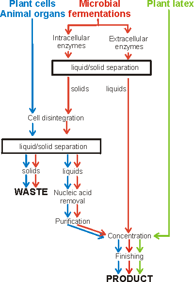

Enzyme Technology
Preparation of enzymes
Readers of papers dealing
with the preparation of enzymes for research purposes will be familiar with
tables detailing the stages of purification. Often the enzyme may be purified
several hundred-fold but the yield of the enzyme may be very poor, frequently
below 10% of the activity of the original material (Table 2.2). In contrast,
industrial enzymes will be purified as little as possible, only other enzymes
and material likely to interfere with the process which the enzyme is to
catalyse, will be removed. Unnecessary purification will be avoided as each
additional stage is costly in terms of equipment, manpower and loss of enzyme
activity. As a result, some commercial enzyme preparations consist essentially
of concentrated fermentation broth, plus additives to stabilise the enzyme's
activity.
Table 2.2. The effect of
number of steps on the yield and costs in a typical enzyme purification process.
The realistic assumptions are made that step yields are 75%, step purifications
are three-fold and step costs are 10% of the initial costs (later purification steps
are usually intrinsically more expensive but are necessarily of smaller scale).
|
Step
|
Relative weight
|
Yield (%)
|
Specific activity
|
Total cost
|
Cost per weight
|
Cost per activity
|
|
1.000
|
100
|
1
|
1.00
|
1
|
1.00
|
1
|
0.250
|
75
|
3
|
1.10
|
4
|
1.47
|
2
|
0.063
|
56
|
9
|
1.20
|
19
|
2.13
|
3
|
0.016
|
42
|
27
|
1.30
|
83
|
3.08
|
4
|
0.004
|
32
|
81
|
1.40
|
358
|
4.92
|
5
|
0.001
|
24
|
243
|
1.50
|
1536
|
6.32
|
The content of the required enzyme should
be as high as possible (e.g., 10% w/w of the protein) in order to ease the
downstream processing task. This may be achieved by developing the fermentation
conditions or, often more dramatically, by genetic engineering. It may well be
economically viable to spend some time cloning extra copies of the required gene
together with a powerful promoter back into the producing organism in order to
get 'over-producers' (see Chapter 8).
It is important that the maximum activity
is retained during the preparation of enzymes. Enzyme inactivation can be caused
by heat, proteolysis, sub-optimal pH, oxidation, denaturants, irreversible
inhibitors and loss of cofactors or coenzymes. Of these heat inactivation, which
together with associated pH effects, is probably the most significant. It is
likely to occur during enzyme extraction and purification if insufficient
cooling is available (see Chapter 1), but the problem is less when preparing
thermophilic enzymes. Proteolysis is most likely to occur in the early stages of
extraction and purification when the proteases responsible for protein turnover
in living cells are still present. It is also the major reason for enzyme
inactivation by microbial contamination. In their native conformations, enzymes
have highly structured domains which are resistant to attack by proteases
because many of the peptide bonds are mechanically inaccessible and because many
proteases are highly specific. The chances of a susceptible peptide bond in a
structured domain being available for protease attack are low. Single 'nicks' by
proteases in these circumstances may have little immediate effect on protein
conformation and, therefore, activity. The effect, however, may severely reduce
the conformational stability of the enzyme to heat or pH variation so greatly
reducing its operational stability. If the domain is unfolded under these
changed conditions, the whole polypeptide chain may be available for proteolysis
and the same, specific, protease may destroy it. Clearly the best way of
preventing proteolysis is to rapidly remove, or inhibit, protease activity.
Before this can be achieved it is important to keep enzyme preparations cold to
maintain their native conformation and slow any protease action that may occur.
Some intracellular enzymes are used commercially without isolation and
purification but the majority of commercial enzymes are either produced
extracellularly by the microbe or plant or must be released from the cells into
solution and further processed (Figure 2.1). Solid/liquid separation is
generally required for the initial separation of cell mass, the removal of cell
debris after cell breakage and the collection of precipitates. This can be
achieved by filtration, centrifugation or aqueous biphasic partition. In
general, filtration or aqueous biphasic systems are used to remove unwanted
cells or cell debris whereas centrifugation is the preferred method for the
collection of required solid material.
Figure 2.1. Flow diagram for the
preparation of enzymes.

Home
| Back | Next
This page was established in 2004 and last updated by Martin
Chaplin
on
6 August, 2014
|